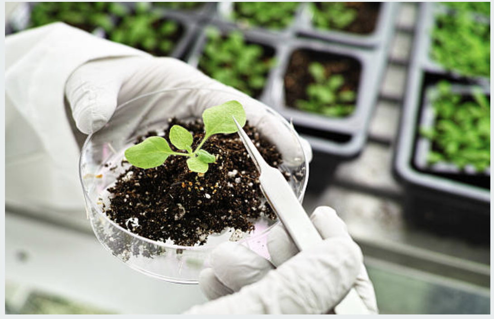
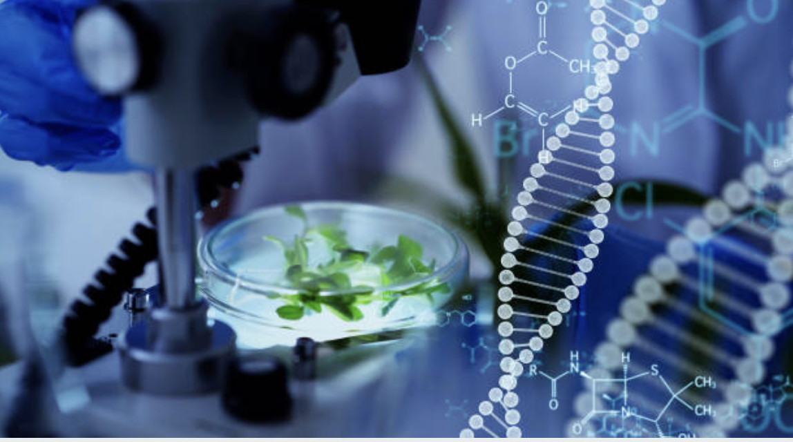

Crop Recommendations
Receive tailored recommendations for crop selection based on various factors.

Yield Predictions
Estimate potential crop yields with our advanced prediction models.

Data-driven Insights
Access valuable insights and analytics for informed decision-making.